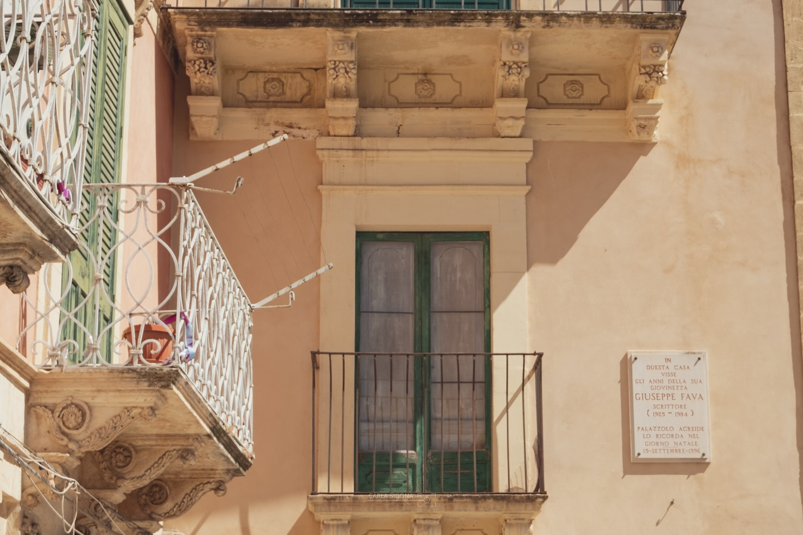
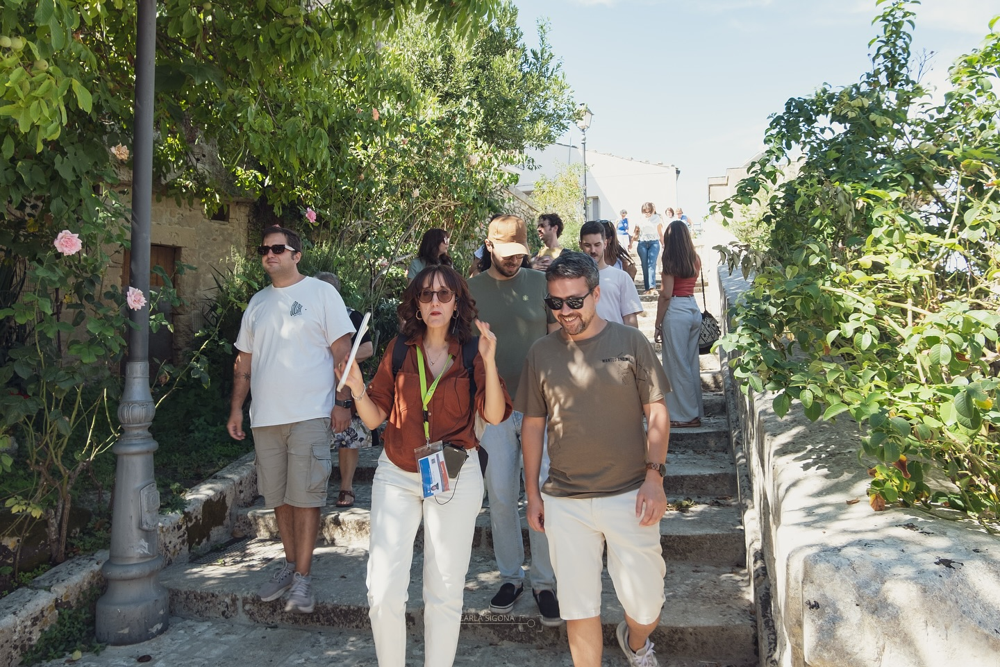
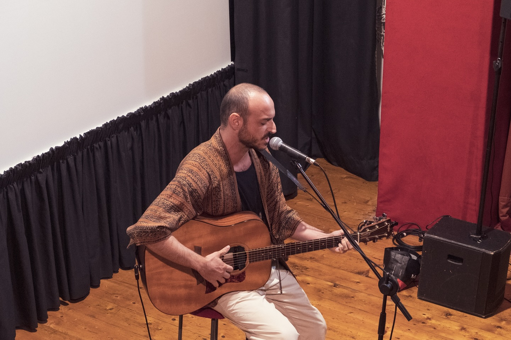
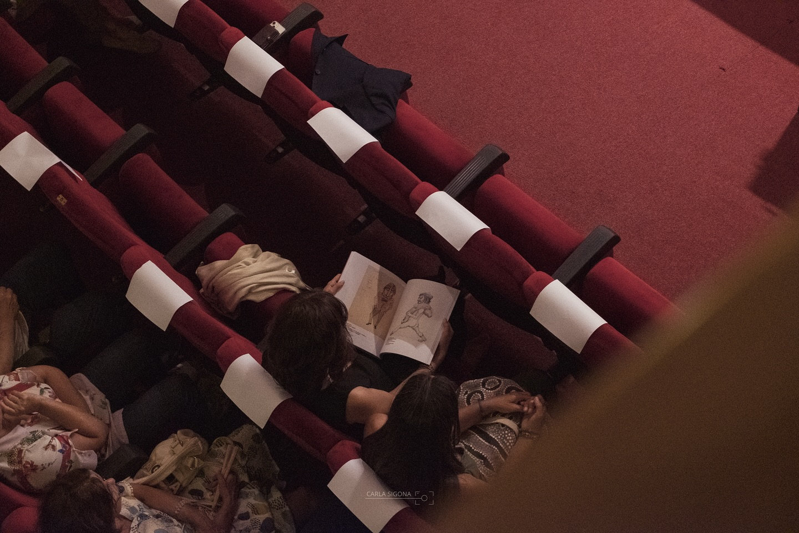

Mediblei APS
@mib_mediblei
- 164Seguiti
- 1.9KFollower
- 12.5KMi piace
Libri, arte e cultura nel cuore degli Iblei.
Mostre, incontri e percorsi alla scoperta del territorio.
Uno spazio di comunità a Palazzolo Acreide.
Post




